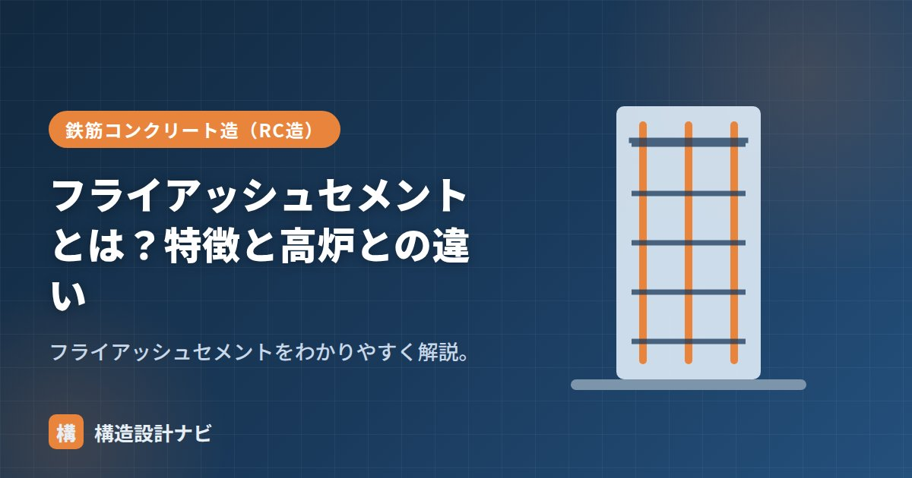

フライアッシュセメントとは？特徴と高炉との違い

フライアッシュセメントとは、石炭火力発電所から出る灰＝フライアッシュ（石炭灰）を混ぜた混合セメントのことです。本来は産業廃棄物・副産物であったフライアッシュを有効利用する材料であり、施工性の向上と環境負荷の低減を同時に狙えるセメントとして、火力発電の多い日本で古くから使われてきました。石炭灰そのものは球状の微粒子で、うまく使うとコンクリートの流動性を高める働きがあります。
- フライアッシュセメントは石炭灰を混ぜた混合セメント（JIS R 5213）
- フライアッシュの混合率でA種・B種・C種の3区分がある
- 高炉セメントとは混合材・得意分野が異なる
フライアッシュとは（原料と生い立ち）
フライアッシュは、石炭火力発電所で石炭を燃焼させた際に発生する灰のうち、排ガスとともに飛散し集塵設備で捕集される微粉末状の灰です。粒子の多くが球形をしているのが特徴で、この球形が後述するワーカビリティ向上の鍵になります。日本ではJIS A 6201でコンクリート用混和材としての品質が規定されており、これに適合したフライアッシュをセメントにあらかじめ混合したものが、フライアッシュセメントです。
特徴
- ワーカビリティ向上：球状の灰が「ボールベアリング効果」で流動性を高め、同じ流動性なら単位水量を減らせる。
- 長期強度：ポゾラン反応で長期に緻密化し強度が伸びる。
- 水和熱が低い：温度ひび割れに有利。
- 乾燥収縮が小さめ。
種類（A種・B種・C種）
フライアッシュの混合率で3区分に分かれます（目安）。
| 区分 | フライアッシュの割合（目安） | 特徴の傾向 |
|---|---|---|
| A種 | 5%超〜10%以下 | 効果は穏やか、初期強度の遅れが小さい |
| B種 | 10%超〜20%以下 | 効果と扱いやすさのバランスが良い代表区分 |
| C種 | 20%超〜30%以下 | 効果が大きい分、初期強度の遅れも大きい |
建築ではB種が代表的です。規格はJIS R 5213で、混合率のほか強さの発現の目安なども定められています。混合率が高いほど施工性・長期強度・低発熱の効果は大きくなりますが、初期強度の発現は遅くなる傾向があるため、工程や気温に応じた区分選定が必要です。
品質を左右するポイント
フライアッシュは天然材料ではなく発電所から供給される副産物のため、燃料炭の種類や燃焼条件によって粒子の性状に多少のばらつきが生じます。JISで品質区分（強熱減量や粉末度など）が設けられていますが、実際の施工では供給元・ロットによる差を踏まえ、事前の配合試験で流動性・強度の見込みを確認することが大切です。
高炉セメントとの違い
| フライアッシュセメント | 高炉セメント | |
|---|---|---|
| 混合材 | 石炭灰（フライアッシュ） | 高炉スラグ微粉末 |
| 得意 | ワーカビリティ向上・水量低減 | 長期強度・化学抵抗性 |
| 強度寄与 | 長期に緩やか | 長期強度が大きい |
| 由来 | 石炭火力発電の副産物 | 製鉄プロセスの副産物 |
どちらも低発熱・長期強度に効きますが、フライアッシュは流動性改善、高炉スラグは強度・化学抵抗に強みがあります。ともに産業副産物を有効利用する点で共通し、いずれも混合セメントとして環境配慮の面からも評価されています。フライアッシュは灰の品質ばらつきに留意が必要です。
生コン工場が石炭灰の供給元を切り替えたタイミングで、同じ配合なのにスランプが合わなくなった経験があります。フライアッシュは副産物なので、ロットが変わるたびに配合試験のデータを見直す習慣にしています。
「フライアッシュセメントB種」、対の「高炉セメント」、全体は「混合セメント」をどうぞ。
ボールベアリング効果（図解）
フライアッシュがワーカビリティを高める理由は、粒子の「形」にあります。
使用上の注意点
| 注意点 | 内容 |
|---|---|
| 初期強度が遅い | ポゾラン反応がゆっくり進むため、材齢7日程度までの強度が出にくい。型枠の存置期間が長くなる |
| 中性化がやや早い | 水酸化カルシウムを消費するため。かぶり厚さの確保が重要 |
| 品質のばらつき | 石炭の産地や燃焼条件で品質が変動する。未燃炭素分が多いとAE剤の効きが悪くなり、空気量の管理が難しくなる |
| 湿潤養生が重要 | ポゾラン反応の進行に水分が必要。乾燥させると長期強度が伸びない |
フライアッシュに含まれる未燃焼の炭素は、AE剤を吸着してしまう性質があります。その結果、同じ量のAE剤を入れても空気量が想定より少なくなることがあり、凍結融解抵抗性が確保できない事態につながります。JIS A 6201では強熱減量（未燃炭素分の指標）が規定されており、品質の安定した製品を使うことと、試験練りで空気量を確認することが重要です。
よくある質問
Q1. フライアッシュと高炉スラグ微粉末はどう使い分けますか？
求める効果で選びます。フライアッシュは球状粒子によるワーカビリティの改善効果が大きく、単位水量の低減に優れます。高炉スラグ微粉末は潜在水硬性により長期強度の伸びが大きく、塩害・硫酸塩に対する抵抗性が高くなります。低発熱性はどちらにもありますが、施工性を重視するならフライアッシュ、耐久性を重視するなら高炉スラグという選び方が一つの目安です。
Q2. フライアッシュセメントはなぜ日本で普及したのですか？
石炭火力発電の副産物を有効利用する必要があったことと、ダムなどの大規模土木構造物で低発熱性が求められたことが背景にあります。日本では戦後の電力需要増加に伴ってフライアッシュの発生量が増え、その処理と有効利用が課題となりました。ダム建設での採用実績を通じて技術が確立し、現在も土木分野を中心に使われています。
Q3. フライアッシュを混和材として後から加える方法もありますか？
あります。生コン工場でセメント・骨材とともに練り混ぜる方法で、混合率を自由に設定できる利点があります。セメントの一部を置き換える方法（内割）と、細骨材の一部を置き換える方法（外割）があり、目的に応じて使い分けます。混合セメントとして製品化されたものより配合の自由度が高く、大規模工事で最適な配合を設計する際に用いられます。
まとめ
- フライアッシュセメントは石炭灰を混ぜた混合セメント。JIS R 5213。
- ワーカビリティ向上・長期強度・低発熱が特徴。A/B/C種があり建築はB種。
- フライアッシュの性状は供給元でばらつくため配合試験が重要。
- 高炉セメントは強度・化学抵抗、フライアッシュは流動性改善に強み。